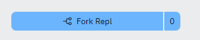
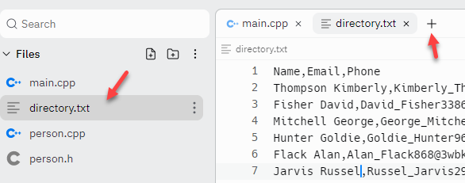

Searching Algorithms
Searching is a big part of everyday life today. When a friend asks, "Who was the actress who starred in the movie the Parent Trap?" you're accustomed to having the answer at your finger tips. Out comes your phone and you ask Siri or Google or DuckDuckGo. How do they know the answer? The programs search for it among all of the pages on the Internet. (Of course, even Google can be wrong; I've never heard of Lindsay Lohan. It's supposed to be Haley Mills!).
Searching Algorithms: the Big Picture
 So, how does searching work? In this lesson, we'll look at two
different techniques for searching a list of data, such as
the data in an array.
Start by clicking on the "running man"
to open a Replit project called
Searching.
So, how does searching work? In this lesson, we'll look at two
different techniques for searching a list of data, such as
the data in an array.
Start by clicking on the "running man"
to open a Replit project called
Searching.

Fork the project so that you have your own copy.When you open the project, click the plus sign to open a new tab in the editor and then click directory.txt to see the file that your program will process.

The text file contains a directory of a thousand people, in random order. Each line has three fields: the name (in last, first order), the person's email, and their phone number. Each of the fields is separated by commas.
 This course content is offered under a
CC
Attribution Non-Commercial license. Content in this course
can be considered under this license unless otherwise noted.
This course content is offered under a
CC
Attribution Non-Commercial license. Content in this course
can be considered under this license unless otherwise noted.